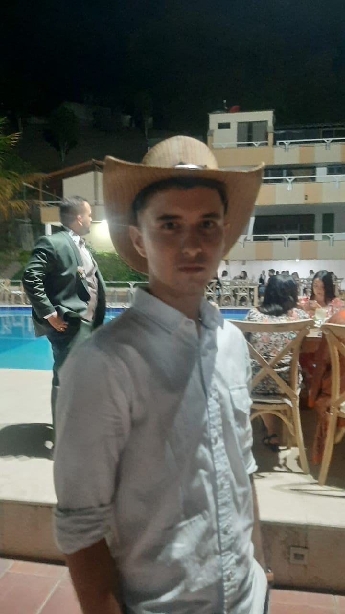
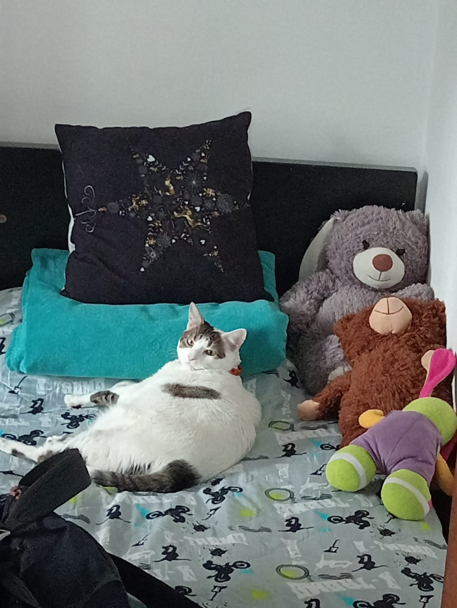

Hola, soy Alejandro. Tengo 19 años, soy estudiante de Ingeniería de Software, y me apasionan la tecnología y los vehículos a motor.

bellako
Hobbies
- Formula 1
- Moto GP
- Campeonato de resistencia
- Computadores

Familia
Esta es mi familia, mi mama que tiene una tienda y mi pareja que es estudiante de fisioterapia, ambas viven en Cartagena, y en vacaciones voy en avión a visitarlas.
Mascotas
Esta es mi mascota, se llama Luna y tiene 3 años. La adopté cuando vivía en Cartagena, le gusta comer pan y las papitas picantes.
